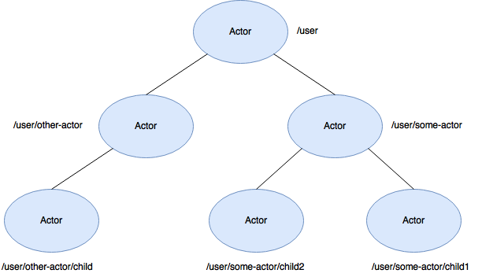
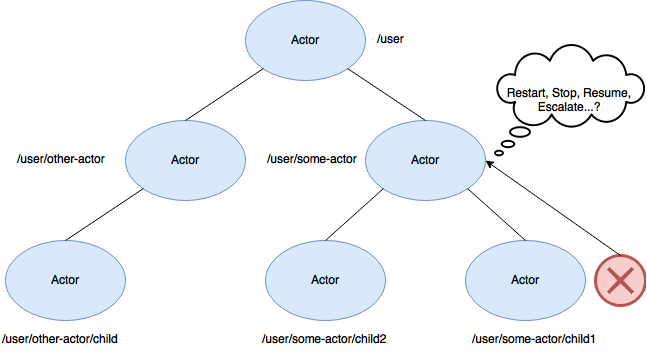
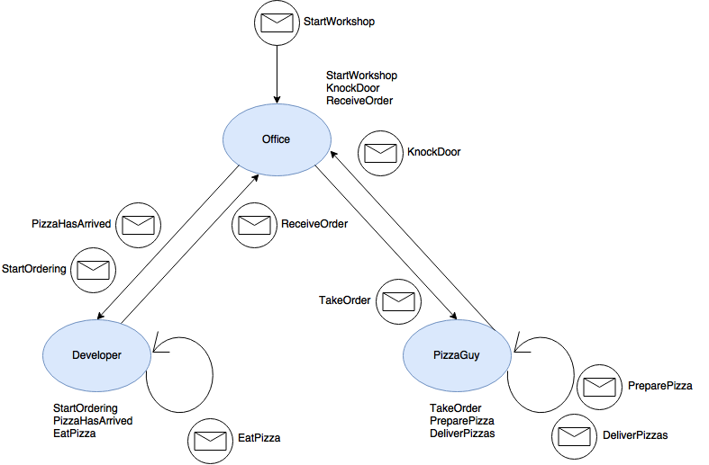

Introduction to Akka
Build powerful concurrent & distributed applications more easily.
About me
Yannick De Turck
Java Developer
Scala and Play enthousiast
Ordina Belgium
@YannickDeTurck
https://github.com/YannickDeTurck
What is Akka?
A toolkit, not a framework
Integrate it without having to follow a source code layout
A single unified programming model for simpler
Concurrency
Distribution
Fault tolerance
No need to worry about
Shared state
Threads
Locks
Advantages by using Akka
Illusion of coding single threaded
High CPU utilization
Low latency
High throughput
Scalability
Distributable by Design
Perfect Programming Model for the Cloud
- Elastic
- Self-healing
- Load-Balancing & cluster rebalancing
From local to remote by configuration
Use cases for Akka
Transaction processing
Service backend
Concurrency/parallelism
Batch processing
The Actor Model
The Actor Model

What is an Actor?
Fundamental unit of computation that embodies
- Processing (Behaviour)
- Storage (State)
- Communication
Actors
Represented by an ActorRef
Ordered mailbox
Asynchronous immutable messages
One message handled at a time
Unique address
Actors
No shared state
Change behaviour at runtime
Start decoupled from threads
Only occupy a thread when handling a message
Extremely lightweight
Architecture of an Actor
- Handle messages
- Different behaviours
- Definition of Props
- Lifecycle events
Reacting on messages
- Sending messages
- Changing state
- Changing behaviour
- Creating more actors
Example of an Actor
Java
public class HelloWorld extends AbstractLoggingActor {
static class Hello {
}
public HelloWorld(){
receive(ReceiveBuilder
.match(Hello.class, this::onHello)
.build()
);
}
private void onHello(Hello hello) {
log().info("Hello world!");
}
public static Props props() {
return Props.create(HelloWorld.class);
}
}
Example of an Actor
Scala
class HelloWorld extends Actor with ActorLogging {
override def receive: Receive = {
case HelloWorld.Hello =>
log.info("Hello world!")
}
}
object HelloWorld {
val props = Props[HelloWorld]
case class Hello()
}
Demo
Creating a basic Actor and sending messages
Defining behaviour
The Actor Hierarchy
The Actor Hierarchy
Supervision
The classic way of failure handling
Caller handles the failure leading to defensive programming
- Error handling mixed with business logic
- Error handling scattered all over the code base
Supervision
Supervising
Child doesn't need to care
Parent decides what will happen
Clean separation of processing and error handling
Actor Lifecycle
- Resume: Ignore the failure and keep processing messages
- Stop: Shutdown the actor
- Restart: Restart the child together with its state
- Escalate: Escalate the failure higher up the chain to handle
Supervisor Strategies
- ActorInitializationException → Stop
- ActorKilledException → Stop
- Exception → Restart
- Throwable → Escalate
- ...
- Otherwise → Escalate
Defining a strategy
Java
public class Supervisor extends UntypedActor {
private static SupervisorStrategy strategy =
new OneForOneStrategy(10, Duration.create("1 minute"),
t -> {
if (t instanceof ArithmeticException)
return resume();
else if (t instanceof NullPointerException)
return restart();
else
return escalate();
});
@Override
public SupervisorStrategy supervisorStrategy() {
return strategy;
}
}
Defining a strategy
Scala
class Supervisor extends Actor {
override val supervisorStrategy = OneForOneStrategy(
maxNrOfRetries = 10, withinTimeRange = 1 minute) {
case _: ArithmeticException => Resume
case _: NullPointerException => Restart
case _: Exception => Escalate
}
}
Demo
Defining a custom strategy
Configuration
application.conf
Logging
Routing
Remote deployment
Dispatchers
Debug settings
...
application.conf
akka {
loglevel = debug
actor {
deployment {
/coffee-house/barista {
router = round-robin-pool
nr-of-instances = 5
}
}
default-dispatcher {
fork-join-executor {
parallelism-min = 4
parallelism-factor = 2.0
parallelism-max = 64
}
throughput = 5
}
}
}
Demo: Pizza ordering system
What else is there?
Akka Cluster
Akka Streams
Akka HTTP
Akka Typed (under development)